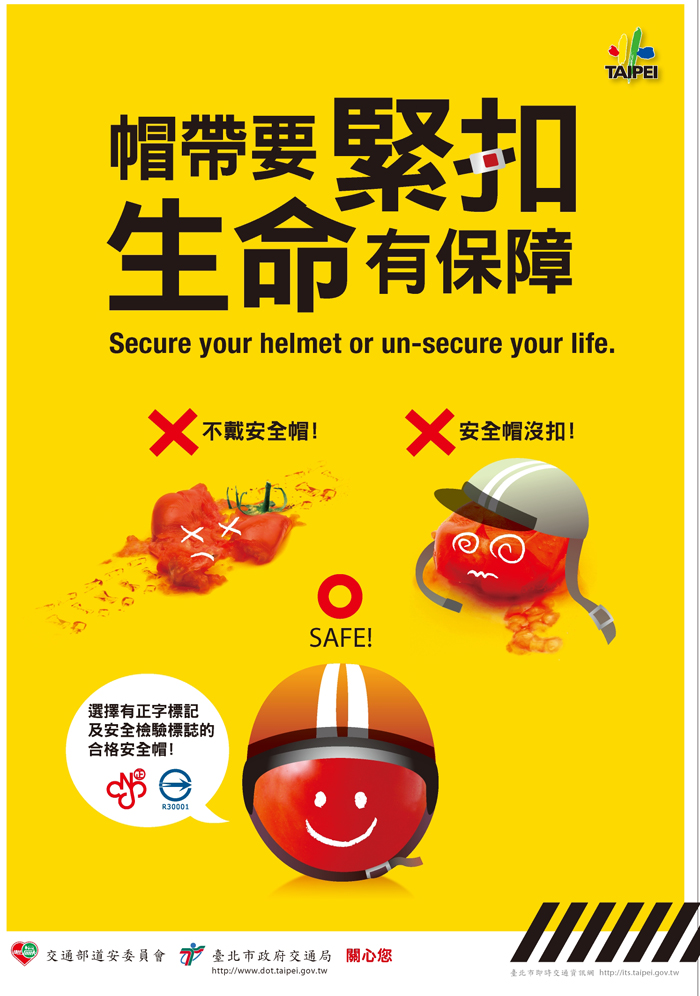
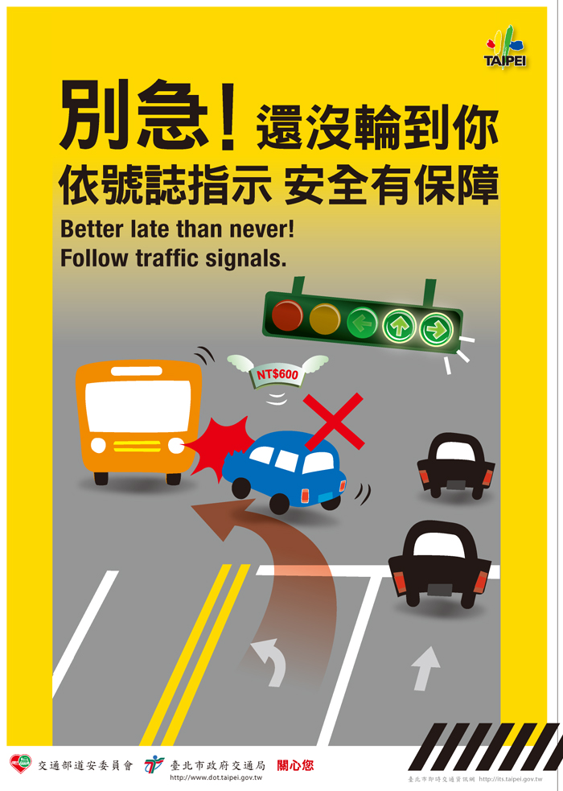
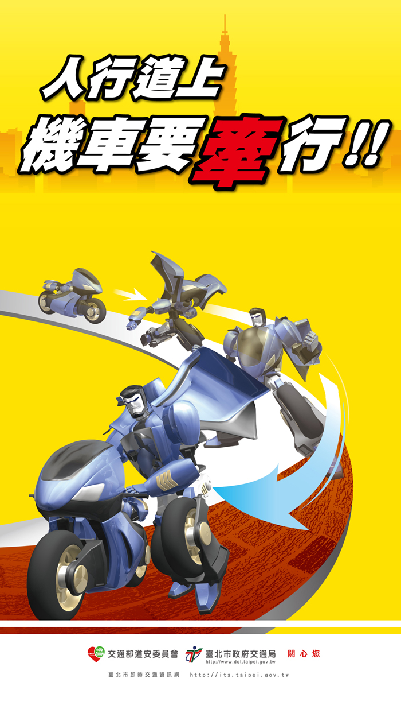
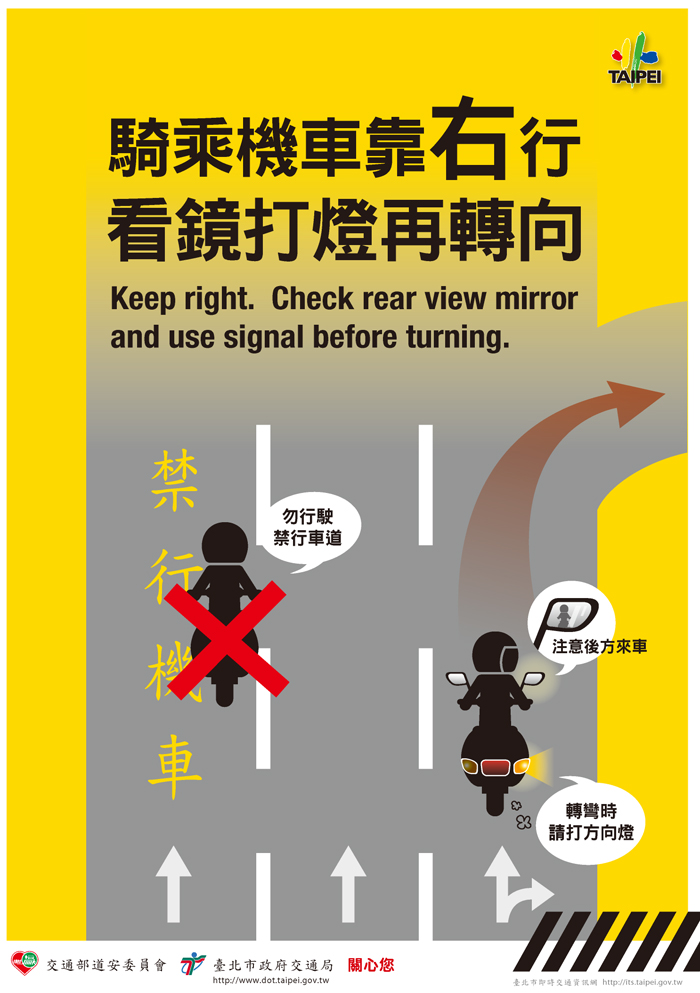
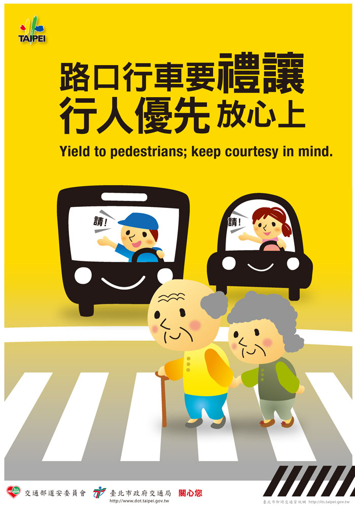
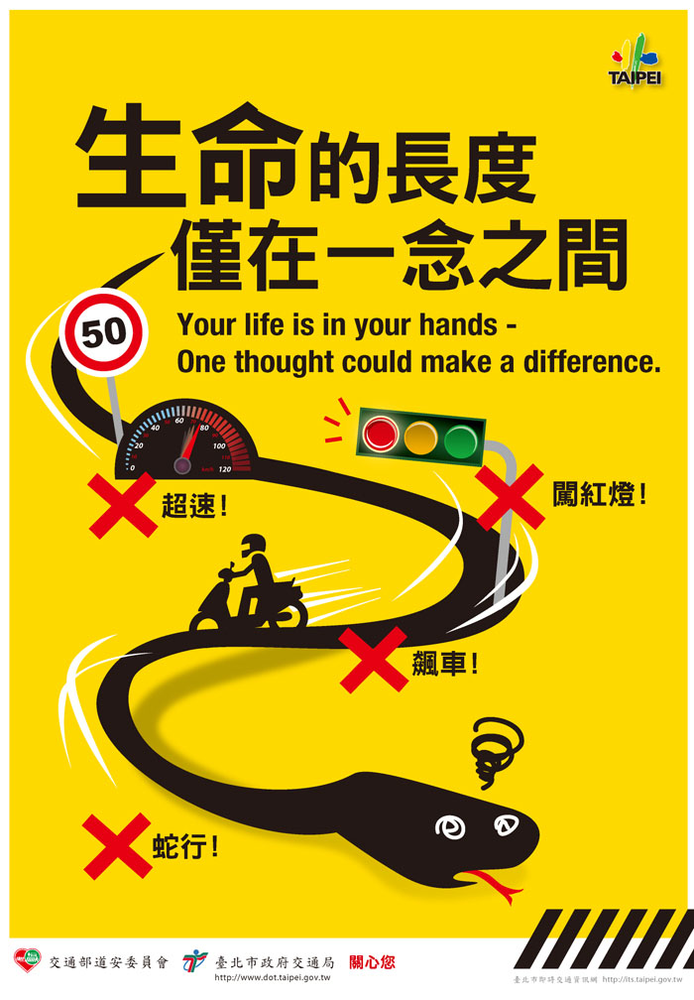
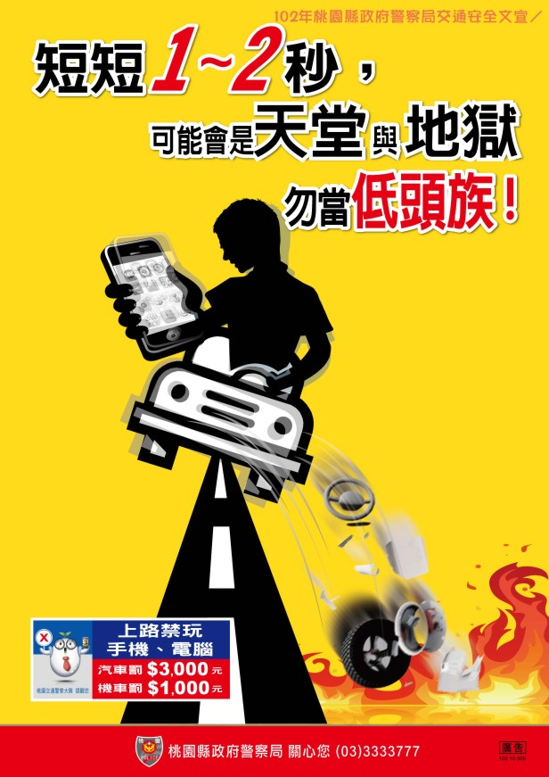
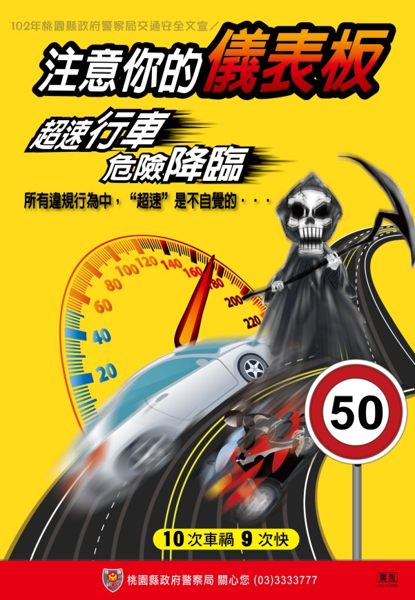
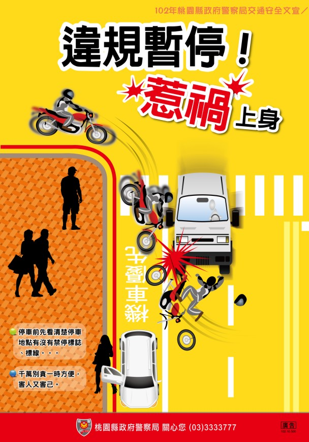

以下都是以一般重型機車 150cc 以下為基準
法條依據(道路交通管理處罰條例)，監理站
1.未戴安全帽：600元
*機車駕駛人或附載座人未依規定戴安全帽第三十一條第六項*

2.紅燈右轉：600-900元
*汽車駕駛人，行經有燈光號誌管制之交岔路口紅燈右轉行為第五十三條第二項，機車或小型車*

3.未戴行照、駕照：免罰
*《道路交通管理處罰條例》修正案，未帶行照、駕照者免罰*
4.騎上人行道：600-1800元
*駕車行駛人行道 第四十五條第一項第六款*

5.機車騎到快車道：600-1800元
*機車，不在規定車道行駛 第四十五條第十三款*

6.越線：900-1800元
*不遵守道路交通標誌、標線、號誌之指示 第六十條第二項第三款*

7.闖紅燈：1800-2700元
*汽車駕駛人，行經有燈光號誌管制之交岔路口闖紅燈 第五十三條第一項 機車 記違規點數三點。*

8.使用手持裝置：1000元
*機車駕駛人行駛於道路時，以手持方式使用行動電話、電腦或其他相類功能裝置進行撥接、通話、數據通訊或其他有礙駕駛安全之行為 第三十一條之一第二項*

9.超速：依據超過多少公里而定
二十公里內，1200-1800元
二十公里至四十公里內，1400-1800元
四十公里至六十公里內，1600-2000元
*駕駛人行車速度，超過規定之最高時速 機車 記違規點數一點。*

10.紅線違停：600元
*在禁止臨時停車處所停車 第五十六條第一項第一款 機車*
